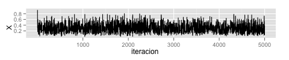
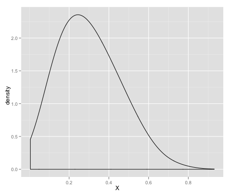

El algoritmo Metropolis-Hastings
Desde el punto de vista de simulación estocástica un problema muy común es el de simular un variable aleatoria con una distribución dada \(\pi(x)\) sobre \(\mathcal{S}\), si bien es cierto que hay varios métodos para hacer esto, resultan insuficientes.

En este sentido Nicolas Metropolis (1953) propuso un algoritmo el cual se basa en la construcción de una cadena de Markov , \({\bf X}=(X_n)\), ergódica la cual tenga a \(\pi(x)\) como distribución estacionaria. Bajo estas condiciones se tiene que
\[ \frac{N_x(n)}{n}\longrightarrow\pi(x)s=1\qquad\mbox{casi seguramente}, \]
donde \(N_x(n)\) es el número de visitas a \(x\) hasta el tiempo \(n\). Por lo cual basta con generar la cadena de Markov \({\bf X}\) y a partir de cierto momento los valores generados tendrán una distribución muy parecida a \(\pi(x)\).
Pero, ¿cómo construir estás cadena?, es aquí donde está el gran mérito de N. Metropolis. Su propuesta fue generar una cadena de la siguiente manera.
Supongamos que podemos generar una cadena de Markov con transición simétrica \({\bf \Theta}=(\theta(x,y))\). Definimos \({\bf X}={X_n, n\geq 0}\) como sigue:
- \(X_0=x^{(0)}\) para algún \(x^{(0)}\) en \(\mathcal{S}\).
- Para \(n=1,2,\dots\). Si \(X_{n-1}=x_{n-1}\)
- Generar \(y\) a partir de \(\theta(x_{n-1},\cdot)\),
- calcular \(\alpha(x_{n-1},y)=\min{1,\frac{\pi(y)}{\pi(x_{n-1})}}\),
- sea \(X_n\) la variable que toma el valor \(y\) con probabilidad \(\alpha(x_{n-1},y)\) y \(x_{n-1}\) con probabilidad \(1-\alpha(x_{n-1},y)\).
Por lo tanto \({\bf X}\) es una cadena de Markov reversible con espacio de estados \(\mathcal{S}\) y función de transición dada por
\[ P(x,y)=\begin{cases} \theta(x,y)\alpha(x,y), x\neq y,\ \theta(x,x)+\sum_{y\neq x}\theta(x,y)[1-\alpha(x,y)], x=y. \end{cases} \]
Esta cadena tiene como distribución estacionaria a \(\pi(x)\) (Ejercicio) por lo cual basta generar un número suficiente de iteraciones para poder tener números generados por tal distribución.
Ejemplo: Queremos generar una números aleatorios con distribución beta (2.7,6.3). La cadena de Markov que podemos generar va a ser \(U_1,U_2,\dots\) variables aleatorias con distribución uniforme en (0,1) y también vemos que el valor \(\alpha\) es fácil de calcular ya que este es
\[ \alpha(x_{n-1}, y)=\min\left(1,\frac{y^{1.7}(1-y)^{5.3}}{x_{n-1}^{1.7}(1-x_{n-1})^{5.3}}\right). \]
Nótese que \(\mathcal{S}\) es el intervalo [0,1], por lo que la cadena de Markov tiene espacio de estados no numerable. Si bien pareciera este un cambio muy pequeño fue necesario construir mucha teoría para formalizar la convergencia y existencia de este método.
Esto lo podemos implementar de manera fácil en R y además podemos visualizar la densidad empírica de nuestra simulación.
a <- 2.7; b <- 6.3; Nsim <- 5000 X <- runif(1) # inicializar la cadena for (i in 2:Nsim){ Y <- runif(1) rho <- dbeta(Y, a, b)/dbeta(X[i-1], a, b) X[i] <- X[i-1] + (Y-X[i-1])*(runif(1)<rho) } library(ggplot2) qplot(X, geom='density', adjust=3)

Algunas referencias:
- Casella, G and Robert, C. Introducing Monte Carlo Methods with R (Use R)
- Hoel, P; Port, S and Stone, C. Introduction to Stochastic Processes
- Nummelin, E. General Irreducible Markov Chains and Non-Negative Operators (Cambridge Tracts in Mathematics)